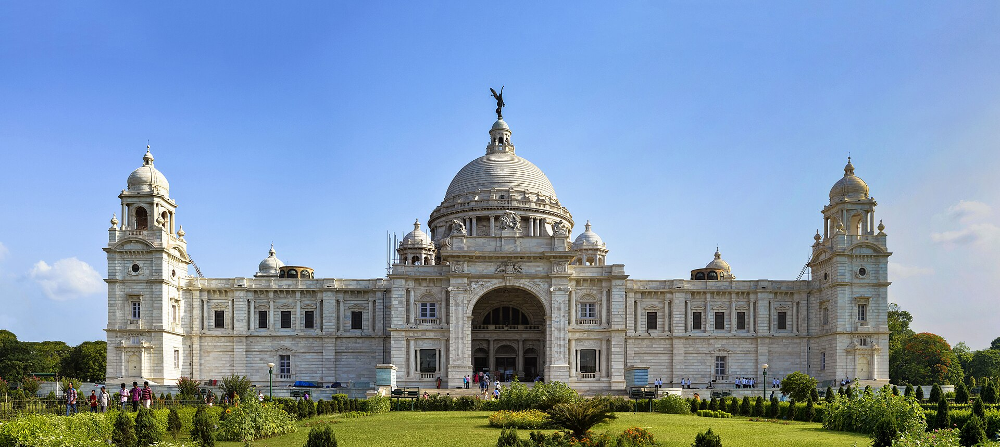

- Location: Queens Way, Maidan, Kolkata, West Bengal, 700071
- Built: Between 1906 and 1921
- Commissioned by: Lord Curzon, then Viceroy of India
- Architect: William Emerson
- Architecture Style: Indo-Saracenic Revival - a blend of British and Mughal elements with Venetian, Egyptian, Islamic and Deccani styles
- Material Used: White Makrana Marble
- Purpose: Memorial to Queen Victoria after her death in 1901
- Features: Large gardens, museum galleries, portraits of British royals, historic artifacts, sculptures
- Area: Spread over 64 acres with lush greenery and pathways
- Opening Hours: 10:00 AM - 5:00 PM (Closed on Mondays for museum)
- Entry Fee: Separate fees for garden and museum (discounted for students and locals)
- Maintained By: Ministry of Culture, Government of India
- Popular For: Photography, school trips, historical interest, colonial architecture etc.
- Nearby Landmarks: Maidan, St. Paul's Cathedral, Birla Planetarium